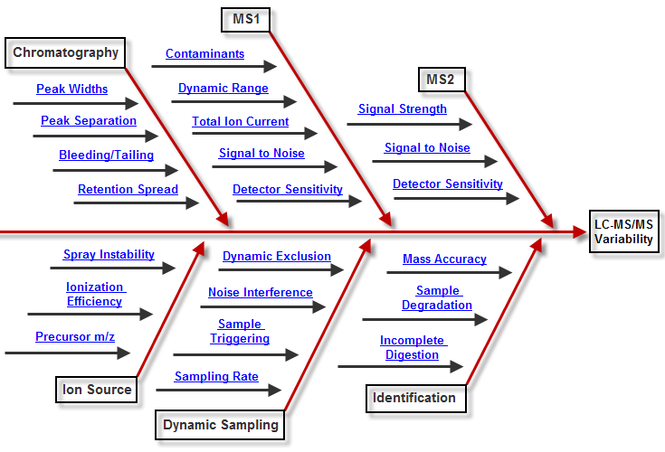

The diagram below is our link to this guide. Simply click on the section of the chart with which you are having trouble , and you will find a thorough description of a realistic problem that we have encountered doing this type of work. This troubleshooting guide was designed to assist the mass spectrometrist in quickly attacking the most common issues that arise from running an LC-MS system in today's exciting world of Proteomics .

Troubleshooting an LC-MS system can be a monumental task. There are HPLC methods , the mechanical aspects of the LC system, such as pumps , solvents , and electronics . The mass spectrometer is an engineering masterpiece, with circuit boards, ion optics , and a variety of parameters that can be modified. It's no wonder LC-MS method development can be a very time-consuming endeavor.
This section was designed to take real life LC-MS examples and show how MassQC can aide in their discovery, and, perhaps more important, how to approach figuring out what is actually wrong in order to fix the problem and get the instrument back on track.
Not to mention, once a technician get's his/her method figured out, or is handed a method from another department, there is high likelihood that something will go wrong and the mass spectrometrist will have to troubleshoot the instrument to get it back in running condition.
- Call Proteome Software toll free at 1-800-944-6027
- Or email here
If you have questions, comments and/or insights about MassQC , you can share them on the MassQC Users Forum .